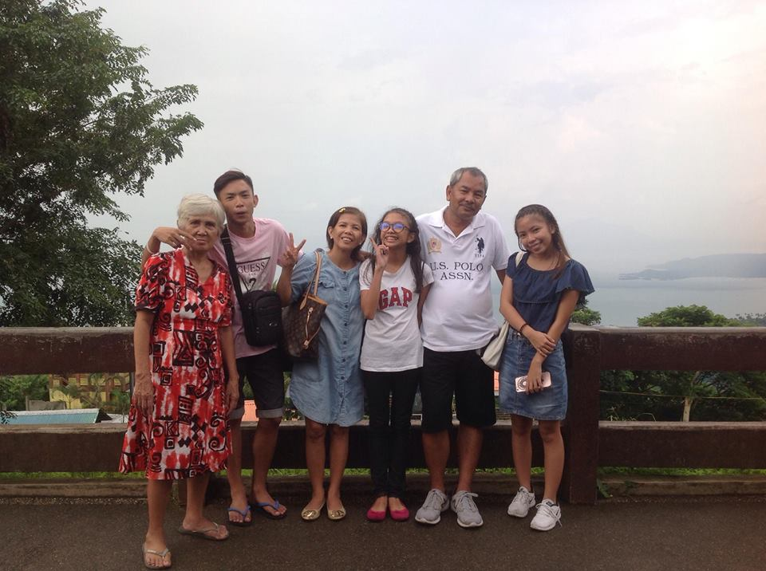
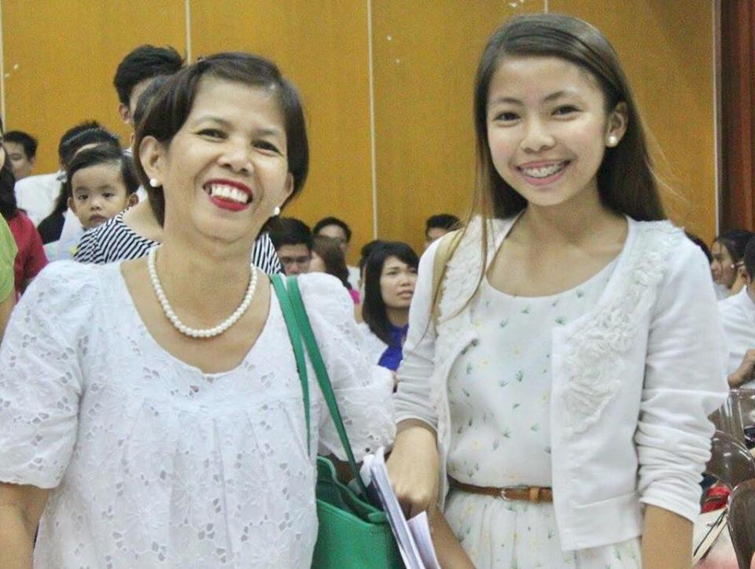
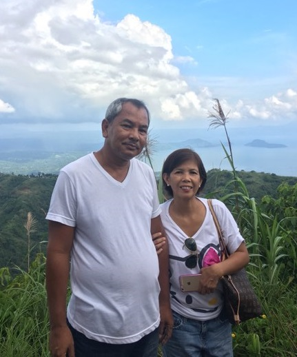

Anneyeong! ✌ I'm Patrisha Jean S. Buenaventura ❀ ❀ ❀


Estrella Santiago Buenaventura, turning 53, my mother dear!!! She really is the breadwinner of our family since then. She is an ISO consultant and at the same time a hands-on mother. Never in my life I've felt that she wasn't there during the strongest and weakest moments of my life, and of course, in betweens. My mom is my bestfriend. We talk of any topic under the sun freely and bagets as much as possible. She influences me a lot, most importantly in my decisions and personal perspectives in life. She counsels me a lot and spoils me a lot with my wants. She's very vocal in expressing to our family members her aspirations, plans, and feelings for all of us. I can tell my mom all of my secrets and we talk of it liberatedly. From her I've learned what unconditional love really is. From her example we've thoroughly learned the value of family. such as respect, humility and so on. I love my mom so much and I want to own her divine characteristics as I ready myself for my future responsibilities as a woman.

Edgar Francisco Buenaventura, 52, my dadsie!!! HE IS DEFINETELY JACK OF ALL TRADES. He is a Civil Engr. Since my mom is working, he stays at home with us. We operate 6 tricycles and he does the maintainance for all of them. He cooks for us, does the laundry, does drop us in our schools, and does both all of the household chores and the natural-father-responsibilities. He loves us more than anything. He is always ready to support all of us in every aspects of our lives. He always make time just to spend precious moments of laughter with all of us. He is so comical. He always makes everyone laugh. His example is one of a kind. We've learned a lot from him, both in the comical and serious phases of our lives. He makes sure that we are always safe and secured. I want my future husband to have the same characteristics that my dad does have. <3

From l to r; Ian Paulo Buenaventura , myself, Denise Joy S. Buenaventura .
copyright © 2017